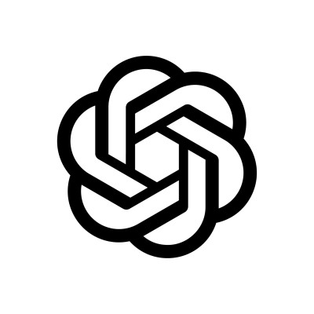

Mr. Kitty Site

What started as a basic webpage became SmartKit: a chatbot trained with OpenAI's API. HTML, CSS, JavaScript, and Python (Flask) all live here — a crash course in APIs and conversation design.
payloads
Things I built, shipped, or still tinker with.

What started as a basic webpage became SmartKit: a chatbot trained with OpenAI's API. HTML, CSS, JavaScript, and Python (Flask) all live here — a crash course in APIs and conversation design.
A React Native workout tracker that grew from a class project into the thing I have worked hardest on. Log type, weight, and reps. Earn little achievement tokens for showing up. Firebase holds the data.

A small interactive Unity game: 3D spaces, basic physics, and C# for the logic. Proof that I like worlds you can walk through, not just pages you can scroll.